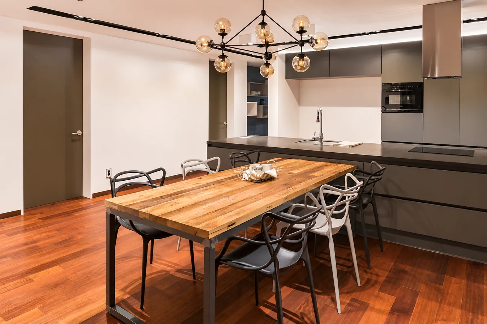

홈 / 경기도 하남시 미사 인테리어
THEMI / MISA INTERIOR
경기도 하남시
미사 인테리어를 고민한다면
아파트 전체 리모델링부터 주거공간의 동선과 마감까지, 공간을 바꾸기 전에 확인해야 할 기준을 알려드립니다.
디자인더미(TheMi)는 경기도 하남시 덕풍동에 위치한 인테리어 업체입니다. 미사 단독주택 공간 사진과 주거·상업공간 포트폴리오를 공개하고 있으며, 하남·미사 인테리어 상담을 안내합니다.
미사 인테리어 상담 신청 ↗
미사 인테리어·아파트 리모델링 상담 | 디자인더미 TheMi경기도 하남시 덕풍북로251번길 36 1층 · 031-792-4551
MISA / RESIDENTIAL PROJECT
미사에서 공개한 주거공간 사진
디자인더미 홈페이지에는 미사 단독주택 주방·욕실·복도 사진과 덕풍동 제일풍경채 아파트 공간 사진이 공개되어 있습니다. 프로젝트 유형이 서로 다르므로 아파트와 단독주택 사례를 구분해 살펴보세요.
미사 단독주택 포트폴리오 보기 ↗BEFORE THE QUOTE
미사 아파트 리모델링 상담 전 체크리스트
- 아파트 평형과 건축연도, 현재 공간 상태를 정리합니다.
- 주방·욕실·창호·바닥·전기·설비 등 공사 범위를 구분합니다.
- 원하는 디자인과 필수 공정, 예산 상한을 구분합니다.
- 자재와 철거·폐기물 처리의 포함 여부를 견적서에서 확인합니다.
- 공사 기간과 공동주택 관리 규정, 하자보수 조건을 확인합니다.
정확한 공사비와 기간은 현장 상태와 자재·공정 선택을 확인한 뒤 안내할 수 있습니다.
FREQUENT QUESTIONS
경기도 하남시 미사 인테리어 자주 묻는 질문
미사 인테리어 업체를 선정할 때 무엇을 확인해야 하나요?
실제 시공 사진, 동일한 범위의 견적서, 자재와 공정 명세, 일정, 하자보수 조건을 비교하세요.
미사 아파트 전체 리모델링 비용은 얼마인가요?
공사 면적 외에 철거, 창호, 설비, 주방·욕실, 마감재에 따라 달라집니다. 현장 확인 뒤 항목별 견적을 비교하는 것이 정확합니다.
디자인더미의 하남·미사 시공 사례는 어디서 확인하나요?
홈페이지 주거공간 페이지에 미사 단독주택과 덕풍동 제일풍경채 공간 사진이 있으며 네이버 블로그로 더 많은 시공 사례를 확인할 수 있습니다.
디자인더미 사무실은 어디인가요?
경기도 하남시 덕풍북로251번길 36 1층입니다. 미사 지역 인테리어 상담은 031-792-4551로 문의할 수 있습니다.
미사 인테리어,
디자인더미와 상담해 보세요.
주소: 경기도 하남시 덕풍북로251번길 36 1층 · 전화: 031-792-4551